01
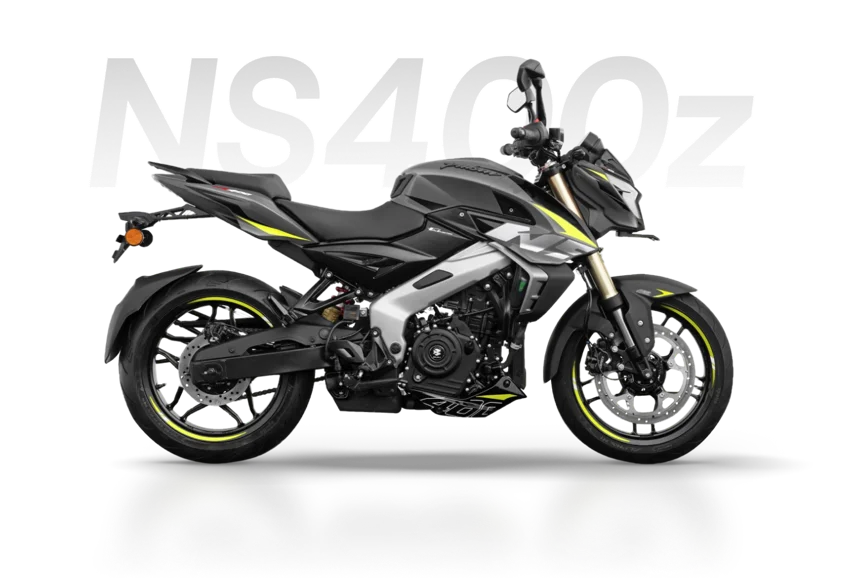
NAKED SPORT
Pulsar NS400Z
Bold streetfighter styling with a performance-focused character. A statement for riders drawn to the Pulsar spirit.
Explore official model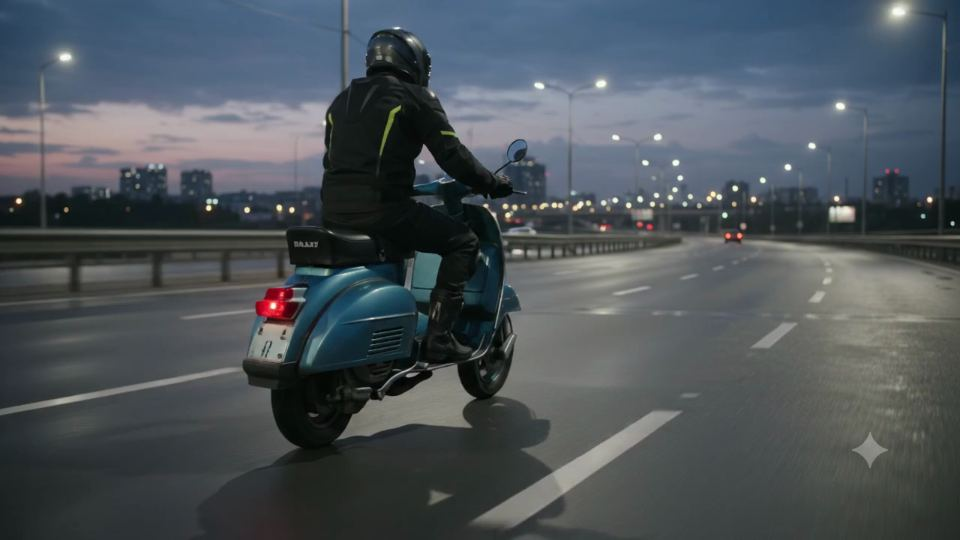
BAJAJ AUTO / A SPIRIT OF EXPLORATION
Every ride begins with a little curiosity.
Find the motorcycle that moves you.
01 / FIND YOUR RIDE
From the everyday commute to the next escape.
Explore six distinct expressions of Bajaj.

NAKED SPORT
Bold streetfighter styling with a performance-focused character. A statement for riders drawn to the Pulsar spirit.
Explore official model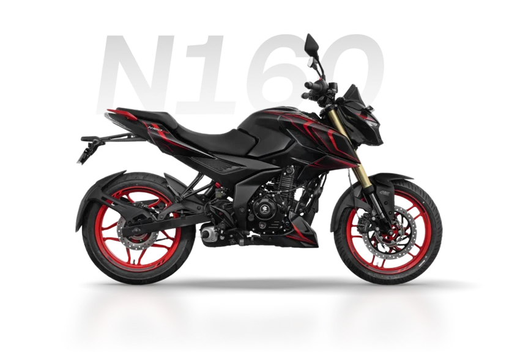
STREET SPORT
Sporty design meets everyday versatility. Explore a Pulsar built around the rhythm of city riding.
Explore official model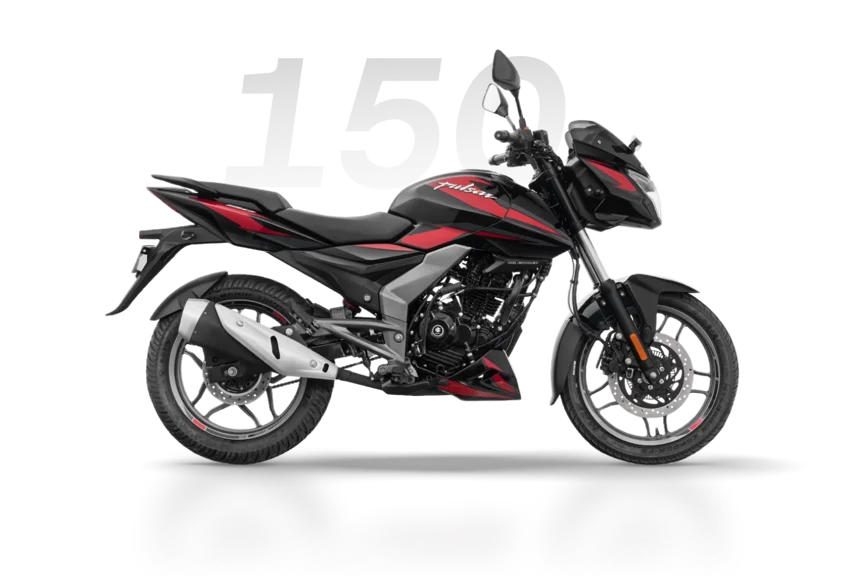
CLASSIC PULSAR
The familiar Pulsar silhouette, with muscular styling and a road-ready attitude for everyday journeys.
Explore official model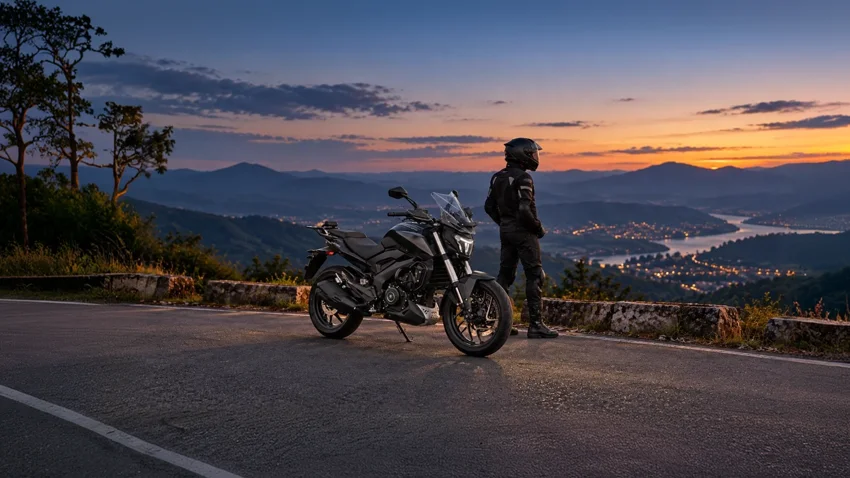
TOURING
A muscular road presence and a touring-oriented personality for riders who enjoy the longer way home.
Explore official model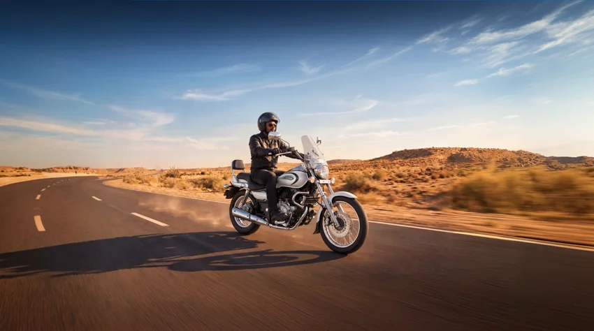
CRUISER
Relaxed cruiser styling, a low-slung silhouette and an easygoing character made for open-road inspiration.
Explore official model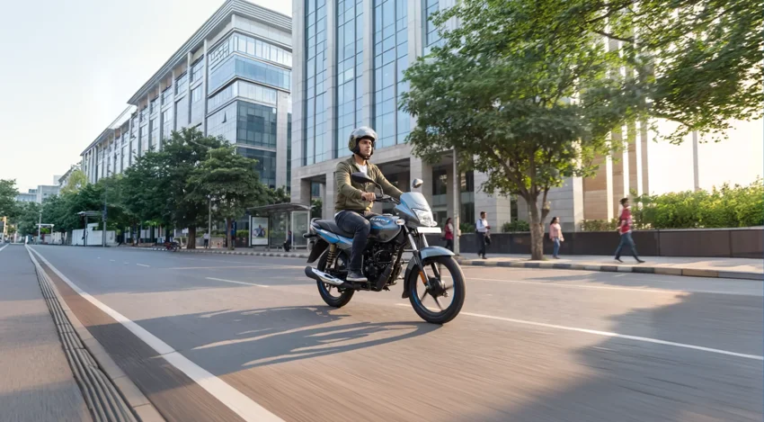
EVERYDAY COMMUTER
Practical commuter styling with a focus on everyday comfort. A simple companion for daily journeys.
Explore official modelMotorcycle images are illustrative; colours and variants may differ. Visit the official pages for current details.
02 / OUR ORIGINS & OUR PEOPLE
Who started it. Who carried it forward.
How the businesses evolved.
The Bajaj story begins with Jamnalal Bajaj and the founding of the group in 1926. The auto business came later, in 1945, during the next generation’s leadership. These are two different milestones in a shared history.
Follow the people who helped shape the Bajaj story.
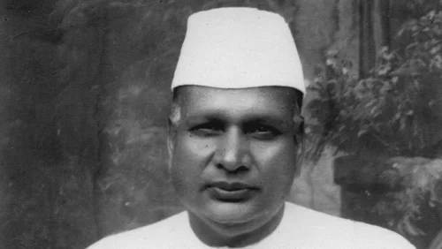
1889–1942 / THE FOUNDER
Founded the Bajaj Group in 1926. His work connected business with the freedom movement, social reform and public service.
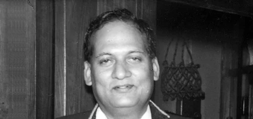
1915–1972 / THE NEXT GENERATION
Jamnalal’s elder son carried the business forward after 1942, expanding its industrial activities during the period in which the auto business began.
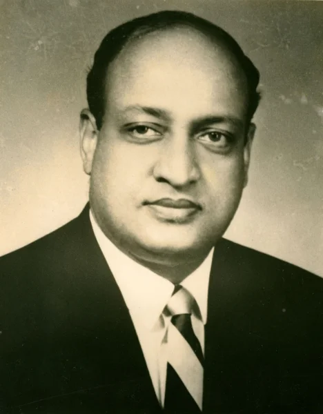
1923–1994 / INDUSTRY & SOCIETY
Jamnalal’s younger son contributed to industry institutions and the group’s social initiatives, helping carry its values into a new generation.
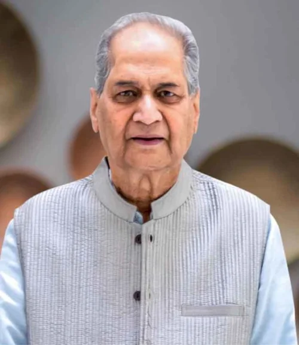
1938–2022 / THE AUTO BUILDER
Kamalnayan’s son joined the business in 1965 and became a defining leader of Bajaj Auto, guiding its growth across decades.
Heritage: Bajaj Group archives ↗ · The founder and 1926 beginnings ↗ · Rahul Bajaj’s oral history ↗
Jamnalal Bajaj establishes the foundation of the Bajaj Group, with a belief in enterprise and service to society.
Bachhraj Trading Corporation is incorporated on 29 November 1945. It begins with imported two- and three-wheelers, before moving towards manufacturing.
A manufacturing licence is obtained in 1959. The business takes the Bajaj Auto name and becomes a public limited company in 1960.
Rahul Bajaj joins in 1965 and helps build the auto business. Rajiv Bajaj becomes Managing Director in April 2005, continuing its motorcycle-focused direction.
The demerger becomes effective on 20 February 2008. Manufacturing, financial services and investments have separate listed-company identities, allowing each business a clearer focus.
Timeline: Official corporate history ↗ · 2008 demerger announcement ↗
UNDERSTANDING THE 2008 DEMERGER
The original listed Bajaj Auto company was renamed Bajaj Holdings & Investment. Manufacturing moved to the company now called Bajaj Auto, and financial services and the wind-energy business moved to Bajaj Finserv. The wider Bajaj Group also includes other businesses with their own histories.
Motorcycles, three-wheelers and related mobility businesses.
Official leadership ↗The financial-services holding business, spanning lending, insurance and investments.
Official leadership ↗An investment company holding interests in group companies and other investments.
Official leadership ↗Bajaj Finserv → Bajaj Finance → Bajaj Housing Finance. This is a simplified subsidiary relationship, not a diagram of all shareholdings. Bajaj Finance is the lending company; Bajaj Housing Finance focuses on housing finance. Finserv’s wider financial-services family also includes Bajaj General Insurance and Bajaj Life Insurance.
Beyond these branches, the wider group includes companies such as Bajaj Electricals (consumer appliances and lighting), Mukand (steel) and Bajel Projects (power infrastructure). They are distinct businesses and were not all created by the 2008 auto demerger.
Explore the wider group ↗ · Financial-services businesses ↗THE PEOPLE LEADING TODAY
Verified on 16 November 2026.
Roles may change after this date.
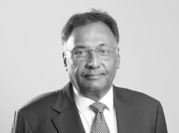
Bajaj Auto · Chairman
Also Vice Chairman of Bajaj Holdings & Investment.
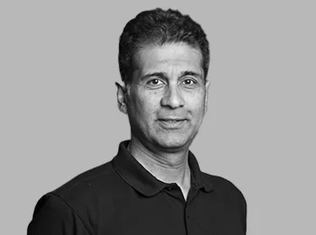
Bajaj Auto · Managing Director & CEO
Rahul Bajaj’s son; Managing Director since April 2005. Also Vice Chairman of Bajaj Holdings & Investment.
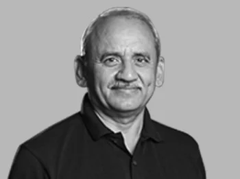
Bajaj Auto · Joint Managing Director
Joint Managing Director from 1 June 2026.
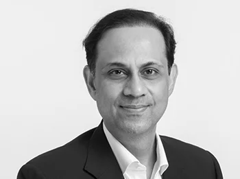
Bajaj Finserv · Chairman & Managing Director
Rahul Bajaj’s son. Also MD & CEO of Bajaj Holdings, and Chairman of Bajaj Finance and Bajaj Housing Finance.
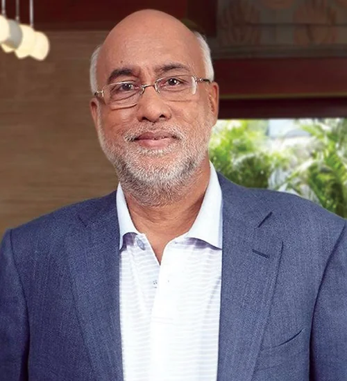
Bajaj Holdings & Investment · Chairman
Leads the board of the investment company.
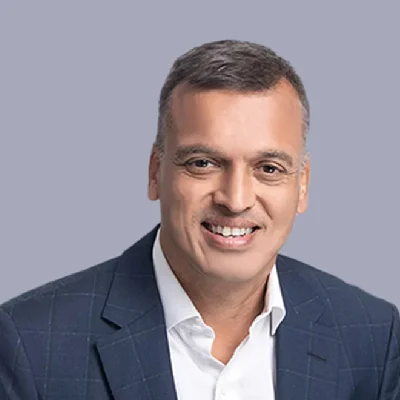
Bajaj Finance · Vice Chairman & Managing Director
Also Vice Chairman of Bajaj Housing Finance. Rajeev Jain and Rajiv Bajaj are different people.
Bajaj Housing Finance · Managing Director
Appointed Managing Director in May 2022, after serving as the company’s first CEO.
Bajaj Auto ↗ · Auto annual report ↗ · Bajaj Holdings ↗ · Bajaj Finserv ↗ · Bajaj Finance ↗ · Bajaj Housing Finance ↗
MD = Managing Director · CEO = Chief Executive Officer · VC = Vice Chairman. Titles are specific to each company; the group does not have one shared CEO for every business. This overview covers selected core companies, rather than every board member or group company.
03 / THE BAJAJ SPIRIT
A world of motorcycles. A shared love of the road.
Bajaj Auto brings together motorcycle families with different personalities: the sporty Pulsar, touring-oriented Dominar, relaxed Avenger and practical Platina.
Discover the people and milestones behind the motorcycles, and how a shared heritage grew into distinct businesses across mobility, finance and industry.
Discover Bajaj Auto ↗04 / LET’S CONNECT
Have feedback on this showcase?
Try the demo contact form.
For sales or service, use Bajaj Auto’s official website ↗.